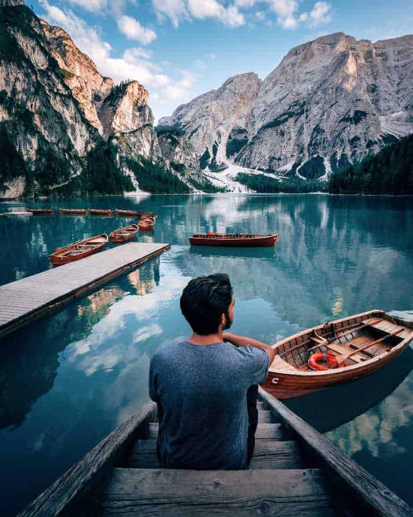
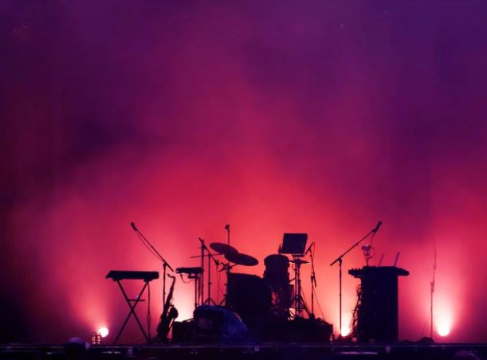

Hobbies
Traveling |

Scientists have proven that travelling is good for both your body and your mind! ... The importance of travel ranges from lower chances
of heart disease to relieving stress and anxiety. On top of the health benefits, travel can also enhance your creativity, your sense of happiness and satisfaction. Travelling can lead to fall ill and maybe then to expensive treatment or in case of fatal accident like for instance car and aerial one to death of many people. The next disadvantage is fatigue that occur while travelling. Most journeys last very long, and it can make us feel tired.
Trips can change a person's feelings and emotions.. |
Music |

I enjoy music and listen to it every day. There are different styles of music for to choose and enjoy If I’m in a good mood,
I like to listen to some energy rock music that keeps me happy and full of energy. When i got tired, I chose some cool, relaxing songs. Music can refresh the mindset.Music exerts a powerful influence on human beings. It can boost memory, build task endurance, lighten your mood, reduce anxiety and depression, stave off fatigue, improve your response to pain, and help you work out more effectively. |